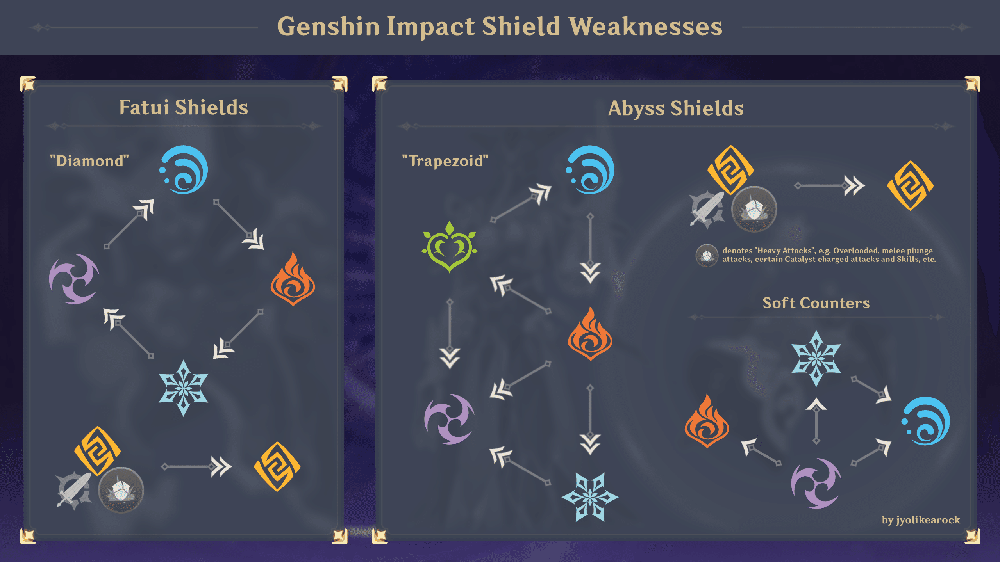

| Артефакт | Описание | Персонажи |
|---|
| Персонаж | Мировой босс | Таланты | Артефакты |
|---|
| Босс | Предмет | Персонажи | Предмет | Персонажи | Предмет | Персонажи |
|---|
| День | Персонажи |
|---|
| Книга талантов | Персонажи |
|---|
Основные статы имеют привязку к типу артефакта. Значения прокачки фиксировано. В таблицах указаны значения для 1 и 20 уровня.
| Характеристика | Значения |
|---|---|
| HP | 717 - 4780 |
| Характеристика | Значения |
|---|---|
| Сила атаки | 47 - 311 |
| Характеристика | Значения |
|---|---|
| HP (%) | 7,0 - 46,6% |
| Сила атаки (%) | 7,0 - 46,6% |
| Защита (%) | 8,7 - 58,3% |
| Мастерство стихий | 28 - 186,5 |
| Восстановление энергии (%) | 7,8 - 51,8% |
| Характеристика | Значения |
|---|---|
| HP (%) | 7,0 - 46,6% |
| Сила атаки (%) | 7,0 - 46,6% |
| Защита (%) | 8,7 - 58,3% |
| Мастерство стихий | 28 - 186,5 |
| Бонус элементального урона (%) | 7,0 - 46,6% |
| Бонус физического урона (%) | 8,7 - 58,3% |
| Характеристика | Значения |
|---|---|
| HP (%) | 7,0 - 46,6% |
| Сила атаки (%) | 7,0 - 46,6% |
| Защита (%) | 8,7 - 58,3% |
| Мастерство стихий | 28 - 186,5 |
| Шанс крит. попадания (%) | 4,7 - 31,1% |
| Крит. урон (%) | 9,3% - 62,2% |
| Бонус лечения (%) | 5,4 - 35,9% |
Основной стат не может появится в дополнительном в том же виде! Если основной стат Сила атаки в процентах, то в дополнительных статах в процентном виде сила атаки не появится.
Дополнительные статы имеют уровни. Уровни определяют какое значение будет у дополнительного стата при его выдаче артефакту. Система сначала выбирает какой стат добавить в артефакт по условию, что стат не должен повторяться в той же форме, а после случайным образом выбирает уровень стата. На основе уровня уже выдается значение. Значение стата не может отличаться от указанных в таблице!
Прокачка дополнительных статов каждые 4 уровня происходит по тому же принципу. Сначала выбирается случайным образом один из дополнительных статов на артефакте. Дальше случайно выбирается уровень стата и по уровню уже добавляется значение. К примеру если HP в процентах 3 уровня, то будет добавлено 5,25% к значению стата.
| Стат | Уровень 1 | Уровень 2 | Уровень 3 | Уровень 4 |
|---|---|---|---|---|
| HP | 209,13 | 239,00 | 268,88 | 298,75 |
| HP (%) | 4,08 | 4,66 | 5,25 | 5,83 |
| Силы атаки | 13,62 | 15,56 | 17,51 | 19,45 |
| Силы атаки (%) | 4,08 | 4,66 | 5,25 | 5,83 |
| Защита | 16,20 | 18,52 | 20,83 | 23,15 |
| Защита (%) | 5,10 | 5,83 | 6,56 | 7,29 |
| Мастерство стихий | 16,32 | 18,65 | 20,98 | 23,31 |
| Восст. энергии (%) | 4,53 | 5,18 | 5,83 | 6,48 |
| Шанс крит. попадания (%) | 2,72 | 3,11 | 3,50 | 3,89 |
| Крит. урон (%) | 5,44 | 6,22 | 6,99 | 7,77 |
| Оружие | Тип | Редкость | Основной стат | Дополнительный стат | День материалов | Пасивка | Использующие персонажи |
|---|
Расчет урона с навыки на основе статов и бафов персонажа. Все результаты примерные и не являются эталонными в реальном бою!
«Щиты Фатуи » относятся к щитам, используемым Фатуи . «Щиты Бездны» относятся к щитам, используемым всеми другими врагами.
Для «мягкого пробития» эффективность примерно на 50% по сравнению с соответствующими жестким пробитием.
Можно указать какие персонажи будут отображаться в списках талантов и боссов.
Настройки сохраняются в браузере и при смене его или устройства не будут подтянуты автоматически!
Скрыть вкладки
Данные расчет гемов учитывая только ежедневные задания, луну, стрим разработчиков, компенсацию за обновление и приблизительные гемы за ивенты!
Расчет производится относительно следующего игрового дня, то есть те гемы, что вы могли сегодня получить, учтены не будут!
Обновления бездны на данные момент также не будут учитываться!